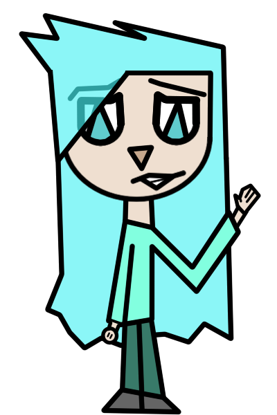

THE BAND
Meet the members of K.N.O.C.K, one of Japan's fastest growing rock bands.
ABOUT K.N.O.C.K
K.N.O.C.K was formed in Tokyo in 2004 under NeoSound Records. Blending energetic Japanese rock with electronic influences and emotional songwriting, the band quickly gained attention through live performances and a unique identity. Between 2004 and 2006 they released nine studio albums before announcing their unexpected disbandment during the summer of 2006. Their music continues to inspire fans around the world.

Kanoko Hatake Lin
Lead Vocal / Rhythm GuitarBorn: November 17, 1985
Founder of K.N.O.C.K and the face of the band. Loved by thousands of fans and criticized by others after deciding to disband the group during the summer of 2006 in order to begin a new chapter of her life as a mother. Kanoko is known for her charismatic stage presence, endless energy and determination to perform as many live shows as possible. She always strives to write meaningful lyrics and memorable melodies, becoming especially popular among teenage rock fans. After the band's breakup she completely disappeared from public life. Rumors suggest that she now lives happily with her husband, Jun Mitzudi Hakubu, while raising their daughter, Yuki Mitzudi Hatake.

Namaru-saki Samara Kuroishi
Bass GuitarBorn: February 5, 1985
A longtime friend of Kanoko since 1997. Namaru is probably the calmest member of K.N.O.C.K. He dedicates himself to perfecting every bass line in order to reach the dreams he has pursued since childhood. Although he always looks sleepy, he is surprisingly energetic and enjoys spending time with his friends both on and off the stage.

Oragashi Toroto Kento
Synthesizers & ProgrammingBorn: September 21, 1984
A close friend of Kanoko since 1998. Oragashi is naturally quiet and reserved. However, once he becomes your friend he constantly jokes around, often playing harmless pranks that everyone has learned to enjoy. He received his first synthesizer from his father when he was only nine years old. Since then he has dedicated himself to improving his musical skills while developing a deep passion for both technology and music.

Chie Yee Gamaroi
DrumsBorn: December 9, 1986
A longtime friend of Kanoko since 1997. Chie began playing drums at the age of twelve. Over the years she developed into one of the band's most powerful performers, eventually becoming K.N.O.C.K's drummer. Her funny and playful personality quickly won over both the audience and the rest of the band. She is so relaxed that Keiko often jokes, "Can somebody please give Chie an emotional exam?!"

Keiko Den Dosena
Second Vocal / PianoBorn: June 28, 1986
Kanoko's closest friend since 1990. Keiko first gained attention after finishing second place in a televised talent show during 2002. She usually performs alongside Kanoko and also plays piano in several songs, including Believe and Alone. Keiko is passionate, emotional and extremely expressive. She dislikes poor planning and becomes frustrated whenever things fall out of control. Despite this, she is deeply empathetic and occasionally sarcastic, making her an irreplaceable presence during the band's most emotional songs.